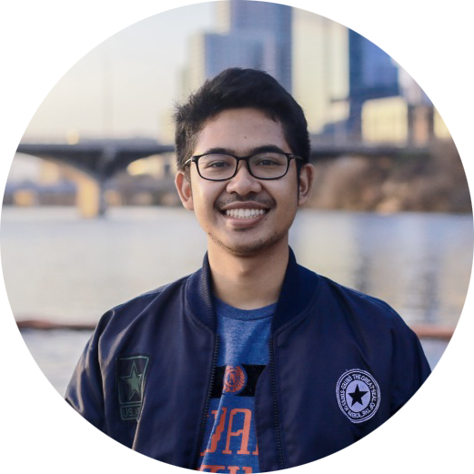

About
Hi! My name is Fadhil Mochammad. I am now working as a Research Assistant at Advanced Robotic Laboratory Institut Teknologi Bandung (ITB). I am also working as a Freelance Full Stack Web Developer in Labtek Indie. Domicile in Bandung and Jakarta. I have enthusiasm on web developing, robotics, and Internet of Things (IoT) stuffs. Kindly check my Github Repo or you can send me an email to fadhil.mochammad1095@gmail.com